pacman::p_load(car, dplyr, effectsize, flextable,
ggplot2, ggpubr, ggsci, RColorBrewer,
readxl, rstatix)15 Análise de Variância
15.1 Pacotes necessários para este capítulo
15.2 ANOVA de um fator
15.2.1 Por que realizar uma ANOVA?
A análise de variância (ANOVA) é um método estatístico para comparar as médias de três ou mais grupos, testando se existem diferenças significativas entre elas. Para analisar três ou mais médias, uma tendência intuitiva seria fazer comparações por pares, usando um teste t de amostras independentes. Com quatro grupos, por exemplo, é possível compará-los realizando seis testes, grupo 1 versus grupo 2, grupo 1 versus grupo 3, grupo 1 versus grupo 4, grupo 2 versus grupo 3, grupo 2 versus grupo 4 e grupo 3 versus grupo 4. Com 5 grupos o número de testes necessários seria igual a 10. Generalizando, a expressão combinatória, usada para calcular o número de combinações de n elementos distintos de um conjunto de k grupos, sem se importar com a ordem é igual a:
\[ \frac {k!}{n!(k-n)!} \]
Ou, usando uma função do R , choose(k, n), facilmente se chega ao resultado. Portanto, para quatro grupos:
choose(4, 2)[1] 6Foi visto na Seção 13.5.2.1 que ao realizar um teste de hipótese podem ocorrer erros. Em geral, tolera-se aceitar um taxa de falsos positivos (erro tipo I) de até 5% (\(\alpha\) = 0,05). Consequentemente, a probabilidade de um erro do tipo I não ocorrer para cada teste t é de 0,95 (isto é, 1 – 0,05). Como os três testes são independentes, a probabilidade de um erro do tipo I não ocorrer nos seis testes é de \((0,95)^6 = 0,735\). Dessa maneira, a probabilidade de ocorrer pelo menos um erro do tipo I nos seis testes t de duas amostras é de 1 – 0,735 ou 0,265 (26,5%), o que é mais alto do que o nível de significância definido de 0,05 (1). Ou seja, realizar múltiplos testes t, infla o erro tipo I.
Por essa razão, a ANOVA de um fator é usada para verificar as diferenças entre vários várias médias dentro de um fator, reduzindo assim o número de comparações de pares e a probabilidade de ocorrer um erro tipo I.
15.2.2 Lógica do Modelo da ANOVA
O procedimento de ANOVA é utilizado para testar a hipótese nula de que as médias de três 1 ou mais populações são as mesmas contra hipótese alternativa de que nem todas as médias são iguais.
Na Seção 14.2.4.2, foram comparadas duas variâncias, usando um teste, denominado de teste F. Este teste, é uma razão entre duas variâncias e recebeu este nome em homenagem a Sir Ronald Aylmer Fisher (veja a Seção 1.2). A variância é uma medida de dispersão que mensura como os dados estão espalhados em torno da média (veja Seção 6.5.3 ) . Quanto maior o seu valor, maior a dispersão.
Considere a Figura 15.1, onde está representada a distribuição de uma variável X em três grupos independentes. Pode-se, claramente, distinguir observações provenientes dessas distribuições, pois a sobreposição delas é pequena. Cada uma dela se dispersa pouco em torno da média.

Agora, observe o Figura 15.2, onde a distribuição da variável X é mostrada, mantendo as mesmas médias, mas com variâncias maiores. Isto torna claro que se o objetivo é distinguir observações provenientes desses grupos não basta avaliar suas médias, há necessidade de comparar a variação entre os grupos com a variação dentro de cada grupo (2).

Se a variação entre os grupos for grande quando comparada à variação dentro de cada grupo, aumenta a probabilidade de reconhecer a proveniência das observações (Figura 15.1). Entretanto, se a variação entre os grupos for pequena comparada à variação dentro do grupo, torna difícil a distinção de observações provenientes dos grupos (Figura 15.2).
Portanto, a ANOVA de uma via se baseia na comparação da variância entre grupos com a variância dentro dos grupos, utilizando as Somas dos Quadrados (SQ) e os graus de liberdade (gl) para calcular os Quadrados Médios (QM). A razão entre a o Quadrado Médio entre os grupos (QME) e a Quadrado Médio dentro dos grupos (QMD) resulta na estatística F, que é comparada com um valor crítico da distribuição F para determinar a significância estatística da diferença entre as médias dos grupos.
\[ F = \frac{\text{variância entre os grupos}}{\text{variância dentro dos grupos}} \]
Quando o valor de F fica próximo de 1, significa que as variâncias são muito próximas; quando F é significativamente maior do que 1, é possível distinguir os indivíduos de diferentes grupos. Ou seja, se o objetivo for mostrar que as médias são diferentes, será bom que a variância dentro dos grupos seja baixa. Pode-se pensar na variância dentro do grupo como o ruído que pode obscurecer a diferença entre os sons (as médias). No gráfico da Figura 15.1, o valor de F seria grande; no da Figura 15.2, seria pequeno.
Como saber se o valor de F é grande o suficiente? Um único valor F é difícil de interpretar sozinho. Há necessidade de colocá-lo em um contexto maior antes que seja possível interpretá-lo. Para fazer isso, usa-se a distribuição F para calcular as probabilidades.
15.2.3 Distribuição F
A distribuição F, também conhecida como distribuição de Fisher-Snedecor, é uma distribuição de probabilidade contínua fundamental na estatística inferencial. Sua principal aplicação é para comparar variâncias de duas ou mais populações normais.
A razão entre a variabilidade entre os grupos e a variabilidade dentro do grupo segue uma distribuição F quando a hipótese nula é verdadeira. Quando se realiza uma ANOVA com um fator obtém-se um valor F. No entanto, se forem extraídas várias amostras aleatórias do mesmo tamanho da mesma população e fosse repetida a mesma análise, o resultado seriam muitos valores F diferentes, constituindo uma distribuição amostral, denominada de distribuição F.
A distribuição F assumindo que a hipótese nula é verdadeira, é possível colocar o resultado de qualquer valor F e determinar quão consistente ele é com a hipótese nula e calcular a probabilidade. A probabilidade que se quer calcular é a probabilidade de observar uma estatística F que é pelo menos tão alta quanto o valor que o estudo obteve. Essa probabilidade permite determinar quão comum ou raro é o valor F, sob a suposição de que a hipótese nula é verdadeira. Se a probabilidade for pequena o suficiente, pode-se concluir que dados são inconsistentes com a hipótese nula. Como já foi mostrado em outros momentos, essa probabilidade é o valor p (Seção 13.6).
A forma da curva de distribuição F varia de acordo com dois graus de iberdade - um para o numerador (variância entre) e outro para o denominador (variância dentro). Cada combinação de graus de liberdade fornece uma curva de distribuição F diferente. As unidades de uma distribuição F são denotadas por F, que possui características importantes:
Distribuição contínua: Como as distribuições normal, t e qui-quadrado (veja Seção 19.2), a distribuição F é uma distribuição contínua;
Valores positivos: A variável F só pode assumir valores maiores ou iguais a zero; A distribuição é limitada à esquerda por zero e não tem limite superior, estendendo-se indefinidamente à direita, o que reflete o fato de que as variâncias são sempre não negativas.
Assimetria positiva: A distribuição F é assimetrica à direita, ou seja, tem uma cauda longa para o lado positivo, mas a assimetria diminui à medida que o número de graus de liberdade aumenta, conforme observado na Figura 15.3.
Parâmetros: A distribuição F é definida por seus graus de liberdade, o do numerador (gl1) e o do denominador (gl2)2.
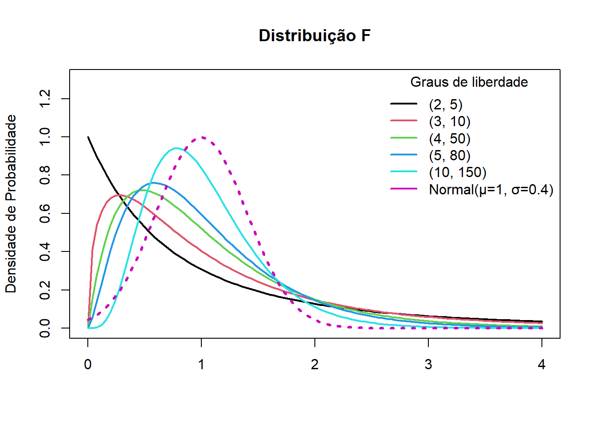
15.2.3.1 Distribuição F e os graus de liberdade
Na Figura 15.3, observa-se que à medida que os graus de liberdade aumentam, a distribuição F realmente começa a se parecer com a distribuição normal, especialmente em termos de simetria e concentração em torno da média. Entretanto, há pormenores importantes sobre como isso acontece com o grau de liberdade do numerador (gl1) e com o grau de liberdade do denominador (gl2).
Graus de Liberdade | Papel na Distribuição F | Efeito ao aumentar |
|---|---|---|
gl1 (numerador) | Relacionado ao número de grupos ou variáveis | A curva fica menos assimétrica, mas ainda com cauda à direita |
gl2 (denominador) | Relacionado ao tamanho da amostra | A curva se aproxima mais rapidamente da normal |
Por que que isso acontece ?
Bom, é um pouco mais complicado!
Vamos lá, procurando tornar o mais simples possível3, acima (Seção 15.2.2) foi mostrado que a razão F na distribuição F é definida como a razão entre duas variâncias estimadas e variância (Seção 6.5.3) é a razão da soma dos quadrados (SQ) dividido pelos graus de liberdade, logo
\[ F = \frac{(SQ_1 / gl_1)}{(SQ_2 / gl_2)} \]
onde (SQ1) e (SQ2) são variáveis independentes com distribuições qui-quadrado (veja Seção 19.2) com graus de liberdade (gl1) e (gl2), respectivamente.
Como a distribuição qui-quadrado se aproxima da normal quando os graus de liberdade aumentam, a razão entre elas (a distribuiçãoa F) também começa a se comportar como uma normal — especialmente quando gl2 é grande (Tabela 15.1) (3).
Esse comportamento é útil na prática porque permite usar testes que assumem normalidade quando os graus de liberdade são grandes, mesmo quando a distribuição original é mais complexa.
15.2.3.2 Funções do R para trabalhar com a distribuição F
No R, existem quatro funções principaisque são ferramentas essenciais para trabalhar com a distribuição F. Elas seguem um padrão comum a muitas distribuições de probabilidade, e cada uma tem uma finalidade específica.
15.2.3.2.1 Função de Densidade de Probabilidade (FDP)
A função df() calcula a densidade de probabilidade de um valor específico em uma distribuição F. A densidade de probabilidade não é a probabilidade em si, mas sim a altura da curva da distribuição F em um determinado ponto.
É usada principalmente para visualizar a forma da distribuição F ou para cálculos mais avançados que exigem a densidade em um ponto. Ela ajuda a entender a “concentração” de probabilidade em diferentes valores. Usa os seguintes argumentos:
x: representa o valor na escala F, que é o valor que se obtém ao calcular a estatística de um teste F (Fobservado) em uma análise, como um teste ANOVA, por exemplo;
df1: são os graus de liberdade do numerador;
df2; são os graus de liberdade do denominador.
# Exemplo: FPD de 2, com df1 = 4 e df2 = 50
df(x = 2, df1 = 4, df2 = 50)[1] 0.151271715.2.3.2.2 Função de Distribuição Cumulativa (CDF)
A função pf() calcula a probabilidade acumulada de uma distribuição F. Ela retorna a probabilidade de que uma variável aleatória F seja menor ou igual a um valor q (quantil).
É a função mais usada para obter o valor p de um teste F. Dado um valor Fobservado (estatística de teste), você usa pf() para encontrar a probabilidade de obter um valor F igual ou mais extremo, o que é fundamental para tomar decisões sobre rejeitar ou não a hipótese nula. Usa os seguintes argumentos:
q: O valor quantil para o qual se quer calcular a probabilidade acumulada;df1: são os graus de liberdade do numerador;df2; são os graus de liberdade do denominador;lower.tail = TRUE: (Padrão) Calcula a probabilidade da cauda inferior (\(P(F \le q)\)). UsarFALSEpara a cauda superior (\(P(F \gt q)\)), que é o que geralmente se busca em testes de hipótese.
# Exemplo: Probabilidade de F ser menor que 2, com df = 4 e df2 = 50
pf(q = 2, df1 = 4, df2 = 50)[1] 0.8911717# Exemplo: Probabilidade da cauda superior de F ser maior que 2 (para valor p)
pf(q = 2, df1 = 4, df2 = 50, lower.tail = FALSE)[1] 0.108828315.2.3.2.3 Função Quantil
A função qf() é o inverso de pf(). Ela recebe uma probabilidade p e retorna o valor quantil correspondente, ou seja, o valor q que tem uma probabilidade acumulada p.
É usada para encontrar o valor crítico de uma distribuição F para um certo nível de significância (\(\alpha\)). Esse valor crítico é a linha de corte que se compara com sua estatística de teste Fobservada para decidir sobre o resultado do teste. Usa os seguintes argumentos:
p: A probabilidade acumulada (geralmente, \(1 − \alpha\) para testes de cauda superior);df1: são os graus de liberdade do numerador;df2; são os graus de liberdade do denominador;lower.tail = TRUE: (Padrão) Encontra o valorqtal que (\(P(F \le q) = p\)).
# Exemplo: Encontrar o valor crítico de F para um nível de significância de 5% (0.05) com df1 = 4 e df2 = 50.
qf(p = 0.95, df1 = 4, df2 = 50) [1] 2.557179# ou
qf(0.05, 4, 50, lower.tail = FALSE)[1] 2.55717915.2.3.2.4 Geração de Números Aleatórios
A função rf() gera números aleatórios que seguem a distribuição F.
É útil para simulações, modelagem estatística, testes de Monte Carlo4 ou para entender a forma da distribuição F gerando amostras aleatórias. Seus argumentos são:
- n : O número de observações aleatórias que se deseja gerar.
- df1: são os graus de liberdade do numerador;
df2; são os graus de liberdade do denominador.
# Exemplo: Gerar 50 números aleatórios de uma distribuição F com df1 = 4 e df2 = 50
amostra_aleatoria <- rf(n = 50, df1 = 4, df2 = 50)
amostra_aleatoria [1] 1.0573081 0.2657684 1.5587222 0.7166389 1.0012000 2.5852662 0.9680548
[8] 0.3596038 0.4931900 0.7757509 2.5668901 1.2911046 1.3791292 0.4768663
[15] 2.5939074 0.7136738 0.5813770 1.1271507 1.3421989 0.9568552 0.5504580
[22] 0.6099989 0.9448446 0.5808896 0.1893399 0.9802767 2.1340040 0.8009304
[29] 0.2861141 0.2166563 3.0700564 0.5223227 0.3763466 2.2159635 0.6020430
[36] 1.6593944 1.6556240 0.1748282 2.7036110 0.3210119 0.4673255 1.8883850
[43] 0.7988363 1.2575992 1.3525177 0.2906694 1.5048461 1.2331708 0.1636128
[50] 0.6830095
Exercício 1
Essas funções são úteis para resolver problemas de probabilidade envolvendo a distribuição F. Por exemplo, qual é a probabilidade de uma variável aleatória F com 4 e 50 graus de liberdade no numerador e no denominador, respectivamente, ser menor que 1? Qual a função deve ser usada?
Resposta:
Pode-se usar a função pf() :
q <- 1
pf(q, df1=4, df2=50)[1] 0.5835786Ou seja, ao se observar a curva da Figura 15.3 de cor verde (gl1 = 4 e gl2 = 50), a probabilidade abaixo de x = 1 é igual a 58,4%, arrendondando.
Exercício 2
Para saber altura (densidade de probabilidade) da curva de cor verde quando x = 1, basta olhar na Figura 15.3, ou seja, ao redor de 0.50. Entretanto, é difícil saber o valor exato. O que fazer para obter este valor?
Resposta:
Calcular a densidade de probabilidade com a função df()
x <- 1
df(x, df1=4, df2=50)[1] 0.5207772
Exercício 3
Qual o valor do nível crítico de F que deixa 50% da área da curva à esquerda, supondo-se os mesmos graus de liberdade anteriores?
Resposta:
Calcular a com a função qf()
p <- 0.50
Fcrit <- qf(p, df1 = 4, df2 = 50)
Fcrit[1] 0.8506612Para representar, graficamente, esse resultado, foi construido o gráfico da Figura 15.4 com a função ggolot2(). Verifica-se que a área sob a curva abaixo de 0,85 é igual a 50%.
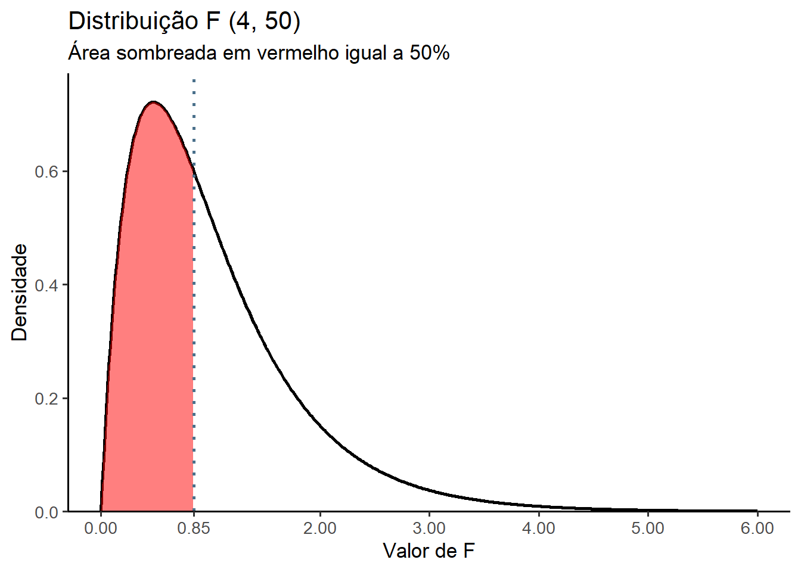
Exercício 4
Gerar 10.000 valores aleatórios de uma distribuição F (20, 100) e após plotar um histograma com curva da distribuição F sobreposta.
Resposta:
# Parâmetros da distribuição F
df1 <- 20
df2 <- 100
# Gerar 100.000 valores aleatórios da distribuição F
set.seed(123) # para reprodutibilidade
valores <- rf(10000, df1, df2)
# Criar histograma com densidade
df_dados <- data.frame(F_valores = valores)
# Curva teórica da distribuição F
x_teorico <- seq(0, max(valores), length.out = 500)
y_teorico <- df(x_teorico, df1, df2)
df_teorico <- data.frame(x = x_teorico, y = y_teorico)
# Gráfico com histograma e curva teórica
ggplot(df_dados, aes(x = F_valores)) +
geom_histogram(aes(y = after_stat(density)), bins = 50, fill = "lightblue", color = "black", alpha = 0.6) +
geom_line(data = df_teorico, aes(x = x, y = y), color = "red", size = 1.2) +
labs(
title = "Histograma de valores simulados da distribuição F(20, 100)",
subtitle = "Com curva teórica sobreposta",
x = "Valor de F",
y = "Densidade"
) +
theme_minimal(base_size = 13)
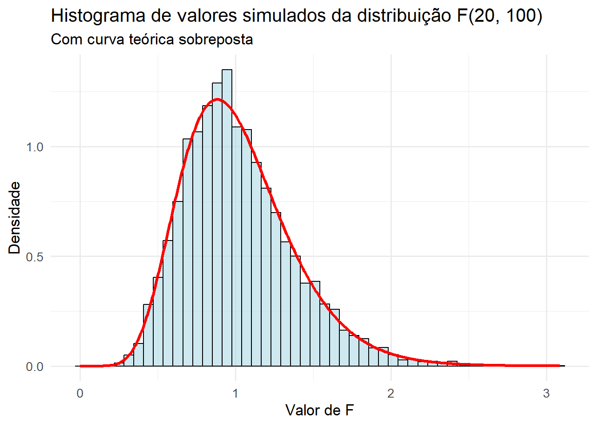
Observando o gráfico da Figura 15.5, verifica-se que a curva se assemelha muito com a curva normal (Seção 9.7).
15.2.4 Cenário para a realização da ANOVA de um fator
A análise de variância (ANOVA) de um fator, também conhecida como ANOVA de uma via, é uma extensão do teste t independente para comparar duas médias em uma situação em que há mais de dois grupos. Dito de outra forma, o teste t para uso com duas amostras independentes é um caso especial da análise de variância de uma via. A ANOVA de um fator compara o efeito de uma variável preditora (variável independente, fator) sobre uma variável contínua (desfecho). Por exemplo, verificar se a intensidade do tabagismo na gestação afeta o peso dos recém-nascidos Figura 15.6.
Contexto
15.2.4.1 Dados do exemplo
Para testar a hipótese de que a intensidade do tabagismo materno afeta o peso do recém-nascido, foram selecionadas as variáveis quantFumo (número de cigarros por dia) e pesoRN (peso ao nascer, em gramas) do banco de dados dadosMater.xlsx (Seção 5.6). A variável quantFumo foi categorizada em três níveis, formando a variável tabagismo, por meio das funções mutate() e case_when():
- Não fumantes: gestantes que relataram nunca ter fumado;
- Fumantes leves: gestantes que fumavam até 10 cigarros por dia;
- Fumantes intensas: gestantes que fumavam mais de 10 cigarros por dia.
Em seguida, foram filtrados os recém-nascidos a termo5 (entre 37 e 41 semanas completas de gestação), e o resultado foi atribuído ao objeto dados. Como os grupos apresentavam tamanhos amostrais bastante desbalanceados6, foi realizada uma subamostragem aleatória7 de 120 gestantes não fumantes, de modo a equilibrar os três grupos para a análise. O conjunto final de dados balanceados foi atribuído ao objeto dados_anova.
dados <- readxl::read_excel("dados/dadosmater.xlsx") %>%
dplyr::select(quantFumo, pesoRN, sexo, ig) %>%
dplyr::mutate(tabagismo = case_when(
quantFumo == 0 ~ "Não",
quantFumo >0 & quantFumo <= 10 ~ "Leve",
quantFumo > 10 ~ "Intenso"),
tabagismo = factor(tabagismo,
levels = c("Não", "Leve", "Intenso")),
sexo = factor(sexo,
levels = c(1, 2),
labels = c("Masc", "Fem"))) %>%
dplyr::filter(ig>=37 & ig < 42)
str(dados)tibble [1,085 × 5] (S3: tbl_df/tbl/data.frame)
$ quantFumo: num [1:1085] 0 0 20 0 20 20 0 0 0 0 ...
$ pesoRN : num [1:1085] 3285 3100 3100 2800 3270 ...
$ sexo : Factor w/ 2 levels "Masc","Fem": 1 1 1 1 1 1 1 1 1 1 ...
$ ig : num [1:1085] 37 37 37 38 39 39 39 39 39 39 ...
$ tabagismo: Factor w/ 3 levels "Não","Leve","Intenso": 1 1 3 1 3 3 1 1 1 1 ...table(dados$tabagismo)
Não Leve Intenso
853 121 111 Corrigindo em parte o desbalanceamento:
# Subamostragem dos não fumantes
set.seed(123) # para reprodutibilidade
nao_fumantes <- dados %>%
filter(tabagismo == "Não") %>%
slice_sample(n=120)
# Manter os outros grupos como estão
leves <- dados %>% filter(tabagismo == "Leve")
intensos <- dados %>% filter(tabagismo == "Intenso")
# Unir os três grupos balanceados
dados_anova <- bind_rows(nao_fumantes, leves, intensos)
# Manter apenas as variáveis necessárias
dados_anova <- dados_anova %>%
dplyr::select(sexo, tabagismo, pesoRN)
str(dados_anova)tibble [352 × 3] (S3: tbl_df/tbl/data.frame)
$ sexo : Factor w/ 2 levels "Masc","Fem": 1 1 1 2 1 2 1 1 1 1 ...
$ tabagismo: Factor w/ 3 levels "Não","Leve","Intenso": 1 1 1 1 1 1 1 1 1 1 ...
$ pesoRN : num [1:352] 3110 2580 2965 3430 3060 ...table(dados_anova$tabagismo)
Não Leve Intenso
120 121 111
CUIDADO! Perda do Poder estatístico
Ao reduzir o grupo de não fumantes de 853 para 120, perde-se informação. E isso pode diminuir a precisão da estimativa da média desse grupo. Aumenta o risco de erro tipo II (veja Seção 13.5.2.1).
Entretanto, como o objetivo é comparar grupos de forma justa, esse sacrifício é aceitável — especialmente em análises exploratórias ou didáticas.
15.2.4.2 Exploração e resumo dos dados
As medidas resumidoras serão obtidas, usando as funções group_by () e summarise () do pacote dplyr.
alpha = 0.05
resumo <- dados_anova %>%
dplyr::group_by(tabagismo) %>%
dplyr::summarise(n = n(),
media = mean(pesoRN, na.rm = TRUE),
dp = sd (pesoRN, na.rm = TRUE),
ep = dp/sqrt(n),
me = qt ((1-alpha/2), n-1)*ep,
IC_Inf = media - me,
IC_sup = media + me)
resumo# A tibble: 3 × 8
tabagismo n media dp ep me IC_Inf IC_sup
<fct> <int> <dbl> <dbl> <dbl> <dbl> <dbl> <dbl>
1 Não 120 3235. 461. 42.1 83.4 3152. 3319.
2 Leve 121 3121. 444. 40.4 80.0 3041. 3201.
3 Intenso 111 3045. 533. 50.6 100. 2944. 3145.media_geral <- mean(dados_anova$pesoRN)
round(media_geral, 0)[1] 313615.2.4.3 Visualização gráfica dos dados
Os gráficos de dispersão (Figura 15.6) são uma maneira interessante de visualizar os dados, principalmente com o pacote ggplot28 :

A Figura 15.6 exibe uma variabilidade pequena entre as médias dos grupos, comparada a média geral e uma grande variabilidade dentro dos grupos. Pensando na estatística F que avalia se a variância entre os grupos é substancialmente maior que a variância dentro dos grupos, pode-se esperar que o efeito do tabagismo sobre os pesos dos recém-nascidos não é tão acentuado.
15.2.5 Definição das hipóteses estatísticas
Para testar a igualdade entre as médias, \(H_{0}: \mu_{1} = \mu_{2} = \mu_{3}\), supondo homocedasticidade, isto é, que as variâncias sejam iguais.
A hipótese alternativa, \(H_1\), diz que, pelo menos, uma das médias é diferente das demais. Ela não é unilateral ou bilateral, é multifacetada porque permite qualquer relação que não seja todas as médias iguais. Por exemplo, a \(H_1\) inclui o caso em que \(μ_1=μ_2\), mas \(μ_3\) tem um valor diferente.
15.2.6 Definição da regra de decisão
O nível significância, \(\alpha\), geralmente escolhido é igual a 0,05. A distribuição da estatística do teste, sob a \(H_{0}\), é a distribuição F. O número de graus de liberdade total \((n – 1)\) é dividido em dois componentes:
- Grau de liberdade do numerador (ENTRE) é dado por \(gl_{E} = k - 1\), onde k é o número de grupos.
- Grau de liberdade do denominador (DENTRO ou residual) é dado por \(gl_{D} = n - k\), onde, \(n = \sum n_{i}\).
No exemplo, para um \(\alpha = 0,05\), tem-se:
alpha <- 0.05
k <- length(resumo$media)
n <- nrow(dados_anova)
glE <- k - 1
glE[1] 2glD <- n - k
glD[1] 349Com esses dados, usando a a função qf()calcula-se o valor crítico de F (Figura 15.7) que é igual:
Fcrit <- qf(1 - alpha, glE, glD)
round(Fcrit, 2)[1] 3.02Portanto, se
\[ \begin{array}{l} |F_{calculado}| < |F_{crítico}| \Rightarrow \text{não se rejeita } H_0 \\ |F_{calculado}| \ge |F_{crítico}| \Rightarrow \text{rejeita-se } H_0 \end{array} \]
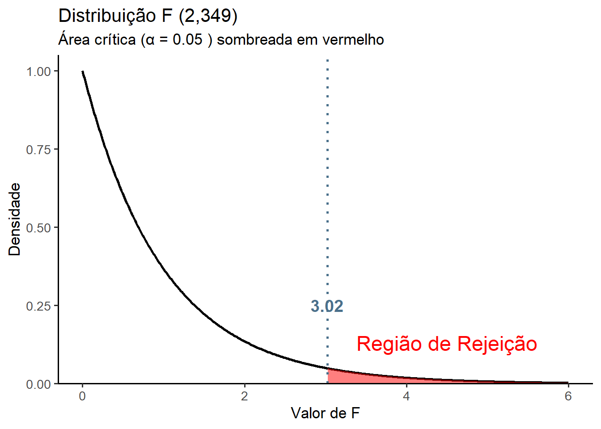
15.2.7 Teste Estatístico
A estatística de teste é obtida calculando duas estimativas da variância populacional, \(\sigma^2\): a variância entre os grupos (\(s_{E}^2\)) e a variância dentro dos grupos (\(s_{D}^2\)).
A variância entre os grupos também é chamada de quadrado médio entre os grupos (\(QM_{E}\)) e é igual a soma dos quadrados entre (\(SQ_{E}\)) ou do fator dividida pelos graus de liberdade entre:
\[ QM_{E} = \frac{SQ_{E}}{gl_{E}} \]
A variância dentro dos grupos é também denominada de quadrado médio dentro dos grupos ou residual (\(QM_{D}\)) e é igual a soma dos quadrados dentro dividida pelos graus de liberdade dentro:
\[ QM_{D} = \frac {SQ_{D}}{gl_{D}} \]
A variância entre os grupos, \(QM_{E}\), dá uma estimativa de \(\sigma^2\) com base na variação entre as médias das amostras extraídas de diferentes populações. Para o exemplo das três categorias de tabagismo durante a gestação, o \(QM_{E}\) será baseado nos valores das médias dos pesos dos recém-nascidos nos três grupos diferentes. Se as médias de todas as populações em consideração forem iguais, as médias das respectivas amostras ainda serão diferentes, mas a variação entre elas deverá ser pequena e, consequentemente, espera-se que o valor do \(QM_{E}\) seja pequeno. No entanto, se as médias das populações consideradas não são todas iguais, espera-se que a variação entre as médias das respectivas amostras seja grande e, consequentemente, o valor de \(QM_{E}\) seja grande.
A variância dentro das amostras, \(QM_{D}\), dá uma estimativa de \(\sigma^2\) com base na variação dos dados de diferentes amostras. Para o exemplo das tr~es categorias de tabagismo durante a gestação, o \(QM_{D}\) será baseado nas médias individuais dos pesos dos recém-nascidos incluídos nas três amostras retiradas de três populações. O conceito de \(QM_{D}\) é semelhante ao conceito de desvio padrão conjugado ou agrupado, \(s_{o}\), para duas amostras.
A estatística de teste é, como já mencionado, a razão das variâncias entre e dentro do grupo. Dessa maneira,
\[ F = \frac {s_{E}^2}{s_{D}^2} = \frac {\frac {SQ_{E}}{gl_{E}}}{\frac {SQ_{D}}{gl_{D}}} = \frac {QM_{E}}{QM_{D}} \]
15.2.7.1 Ajuste do modelo
No R, para ajustar um modelo ANOVA clássica com um fator categórico, pode-se usar a função aov() do R base9. É uma função simples e direta para modelos balanceados. Ela espera a chamada notação de fórmula, portanto, os dados são incluídos separando as duas variáveis de interesse separadas por \(\sim\) (til) e os dados (dados_anova), onde as variáveis especificadas na fórmula, são encontradas.
modelo.aov <- aov(pesoRN ~ tabagismo, dados_anova)
summary(modelo.aov) Df Sum Sq Mean Sq F value Pr(>F)
tabagismo 2 2136213 1068107 4.647 0.0102 *
Residuals 349 80209539 229827
---
Signif. codes: 0 '***' 0.001 '**' 0.01 '*' 0.05 '.' 0.1 ' ' 1A saída, liberada pela função summary(), é bem reduzida, relatando as informações específicas da Tabela da ANOVA, a estatística F junto com o valor p e os graus de liberdade, soma dos quadrados (Sum Sq) e quadrados médios (Mean Sq), que com frequência se necessita para o relatório do modelo.
A variância entre os grupos também é chamada de quadrado médio entre os grupos e é igual à soma dos quadrados entre ou do fator dividida pelos graus de liberdade entre. A variância dentro dos grupos é também denominada de quadrado médio dentro dos grupos ou residual e é igual à soma dos quadrados dentro dividida pelos graus de liberdade dentro.
A ANOVA detectou um efeito significativo do fator, que neste caso é o tabagismo, o valor \(F_{calculado} = 4,647 > F_{crítico} = 3.02\) e o valor p = 0,0102 (< 0,05).
Pode-se simplesmente relatar isso e encerrar, mas é provável que se queira saber quais grupos diferem uns dos outros. Lembre-se de que não se pode apenas inferir isso a partir de uma visão dos dados, existem testes estatísticos para ajudar a entender as diferenças dos grupos, que serão posteriormente realizados, apos a avaliação dos pressupostos do modelo.
15.2.7.2 Avaliação dos pressupostos do teste
Ao realizar um teste de ANOVA de um fator deve-se assumir que:
- Exista normalidade dos resíduos (6);
- Exista homogeneidade de variâncias: os grupos devem ter variâncias semelhantes (homocedasticidade);
- Amostras aleatórias e independentes;
- Todos os grupos devem ter tamanho amostral adequado. Grupos com menos de 10 participantes são problemáticos por reduzirem a precisão da média. Na prática, deve-se evitar menos de 30 participantes. A relação entre os grupos não deve ser maior do que 1:4 (7);
- Não devem existir valores atípicos (outliers);
- A mensuração dos dados deve ser em nível intervalar ou de razão.
15.2.7.2.1 Avaliação da normalidade
Verifica-se a premissa de normalidade dos resíduos, usando o teste de Shapiro-Wilk e desenhando um gráfico de probabilidade normal (gráficos Q-Q).
Os resíduos são prodizidos pelo modelo.aov e podem ser diretamente acessados, através dele, criando as variáveis resíduos e ajustados , no dataframe dados_anova, para uso na avaliação:
dados_anova <- dados_anova %>%
mutate(residuos = residuals(modelo.aov),
ajustados = fitted(modelo.aov))
str(dados_anova)tibble [352 × 5] (S3: tbl_df/tbl/data.frame)
$ sexo : Factor w/ 2 levels "Masc","Fem": 1 1 1 2 1 2 1 1 1 1 ...
$ tabagismo: Factor w/ 3 levels "Não","Leve","Intenso": 1 1 1 1 1 1 1 1 1 1 ...
$ pesoRN : num [1:352] 3110 2580 2965 3430 3060 ...
$ residuos : Named num [1:352] -125 -655 -270 195 -175 ...
..- attr(*, "names")= chr [1:352] "1" "2" "3" "4" ...
$ ajustados: Named num [1:352] 3235 3235 3235 3235 3235 ...
..- attr(*, "names")= chr [1:352] "1" "2" "3" "4" ...O teste de Shapiro-Wilk, para avaliar a normalidade dos resíduos, é feito com a função shapiro_test() do pacote rstatix, usando um teste geral dos resíduos, pois dados têm tamanhos semelhantes e se quer validar a suposição global do modelo:
dados_anova %>%
shapiro_test(residuos)# A tibble: 1 × 3
variable statistic p
<chr> <dbl> <dbl>
1 residuos 0.993 0.0820Para o gráfico Q-Q (Figura 15.8), pode ser usado a função ggqqplot () do pacote ggpubr que produz um gráfico QQ normal com uma linha de referência, acompanhada de area sombreada, correspondente ao \(IC_{95\%}\).
ggpubr::ggqqplot(
data = dados_anova,
x = "residuos",
color = "steelblue",
title = "QQ Plot dos Resíduos",
ylab = "Quantis amostrais",
xlab = "Quantis amostrais",
conf.int = TRUE)
Uma outra maneira de observar a distribuição dos resíduos é através de um histograma ( Figura 15.9):
ggplot(dados_anova, aes(x = residuos)) +
geom_histogram(bins = 15,
fill = "lightblue",
color = "black") +
labs(title = "Histograma dos Resíduos",
x = "Resíduos", y = "Frequência") +
theme_classic(base_size = 13)
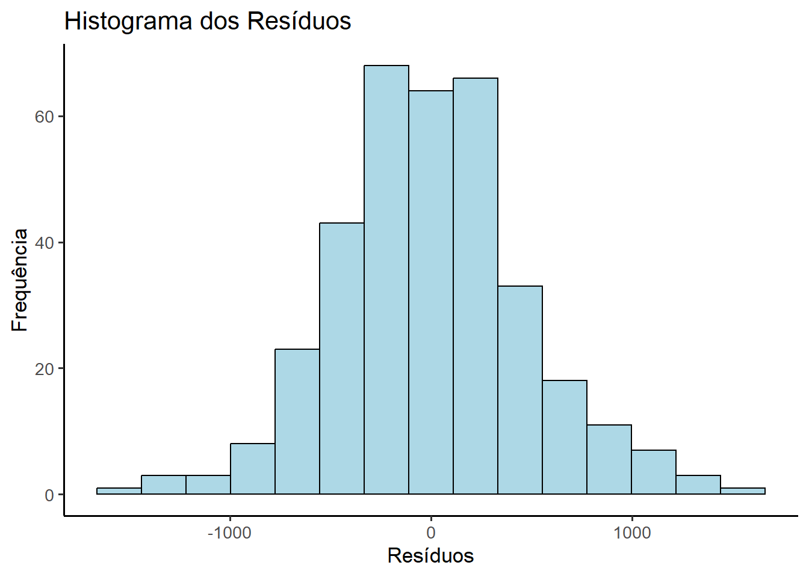
A saída do teste de Shapiro-Wilk um valor p = 0,082, ou seja, maior que 0.05 e, portanto, não há evidência de violação da normalidade. Os gráficos Q-Q e o histograma reforçam está conclusão, e pode-se assumir que os resíduos têm uma distribuição praticamente normal.
15.2.7.2.2 Verificação da presença de outliers
Pode-se aqui, além de usar boxplots, usar a função a função identify_outliers() do pacote rstatix (8) e, quando os grupos forem desbalanceados, usar a função by_group() do pacote dplyr para avaliar por nível de fator:
dados_anova %>%
rstatix::identify_outliers(residuos)# A tibble: 11 × 7
sexo tabagismo pesoRN residuos ajustados is.outlier is.extreme
<fct> <fct> <dbl> <dbl> <dbl> <lgl> <lgl>
1 Masc Não 2051 -1184. 3235. TRUE FALSE
2 Masc Leve 4350 1229. 3121. TRUE FALSE
3 Fem Leve 1715 -1406. 3121. TRUE FALSE
4 Fem Leve 4620 1499. 3121. TRUE FALSE
5 Masc Intenso 1440 -1605. 3045. TRUE FALSE
6 Masc Intenso 1795 -1250. 3045. TRUE FALSE
7 Masc Intenso 4410 1365. 3045. TRUE FALSE
8 Fem Intenso 1895 -1150. 3045. TRUE FALSE
9 Fem Intenso 4390 1345. 3045. TRUE FALSE
10 Fem Intenso 4225 1180. 3045. TRUE FALSE
11 Fem Intenso 1785 -1260. 3045. TRUE FALSE Existem 11 observações marcadas como is.outlier = TRUE, mas nenhuma como is.extreme = TRUE, o que indica que esses pontos estão fora dos limites interquartis (IIQ), mas não ultrapassam os limites extremos (> 3×IIQ). São outliers moderados, não extremos — ainda assim, merecem atenção, verificando se esses pontos têm influência desproporcional no modelo .
Para isso, pode-se usar medidas de influência (9), que são usadas na análise de regressão, pois a ANOVA pode ser encarada como um caso especial de regressão linear com variáveis categóricas. E como foi observado a presença de vários outliers eles devem ser avaliados., pois podem influenciar os coeficientes. Isto é particularmente importante quando se trabalha com poucos grupos ou grupos desbalanceados e também quando se tem mais de um fator e existe interação entre os fatores.
Distância de Cook: avalia o impacto de cada ponto na estimativa dos coeficientes (10). É calculada pela função
cooks.distance()que exige um objeto da classelm(linear model) e, portanto, o modelo deve ser refeito. Este modelo necessita, como oaov(), de uma fórmula (pesoRN~tabagismo) e dos dados:modelo_lm <- lm(pesoRN~tabagismo,data = dados_anova) plot(cooks.distance(modelo_lm), type = "h", main = "") abline(h = 1, col = "red", lty = 2)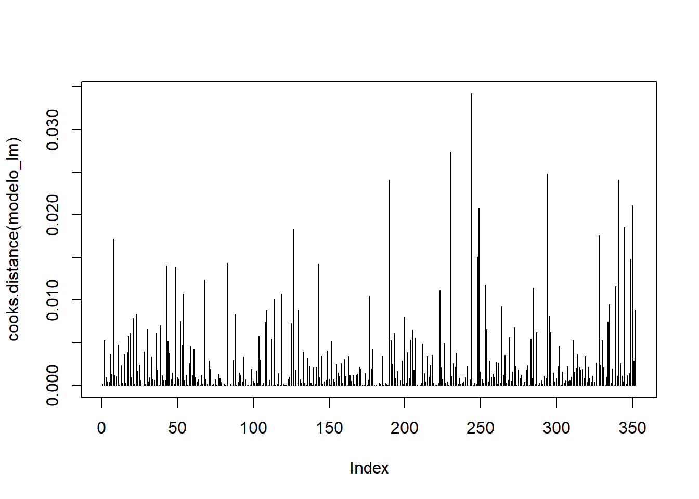Figura 15.10: Distância de Cook Valores acima de 1 (ou muito maiores que os demais) indicam alta influência. Como não existem valores acima de 110, a influência é pequena.
Alavancagem (Leverage)
As estatísticas de alavancagem (ou valores hat) medem a influência do valor observado da variável desfecho sobre os valores previstos. Os valores de alavancagem podem situar-se entre 0 (o caso não tem qualquer influência) e 1 (o caso tem influência total ). Se nenhum caso exercer influência indevida sobre o modelo, seria de esperar que todos os valores de alavancagem se situassem próximos do valor médio. Alguns autores (@Hoaglin1978TheHM) recomendam investigar casos com valores superiores ao dobro da média como ponto de corte para identificar casos com influência indevida.
valores_hat <- hatvalues(modelo_lm) summary(valores_hat)Min. 1st Qu. Median Mean 3rd Qu. Max. 0.008264 0.008264 0.008333 0.008523 0.009009 0.009009valores_altos <- valores_hat[valores_hat > 2 * summary(valores_hat)[4]] valores_altosnamed numeric(0)DFBETAS (Difference in BETA)
É uma medida de diagnóstico importante na análise de resíduos em um modelo linear. Ele serve para quantificar o quanto a remoção de uma única observação (um ponto de dados) influencia a estimativa de cada coeficiente no modelo (11).
dfb <- dfbetas(modelo_lm)
head(dfb) (Intercept) tabagismoLeve tabagismoIntenso
1 -0.02401343 0.01701525 0.01664599
2 -0.12597546 0.08926272 0.08732557
3 -0.05183764 0.03673072 0.03593360
4 0.03735572 -0.02646923 -0.02589480
5 -0.03360471 0.02381137 0.02329462
6 0.10465239 -0.07415379 -0.07254453Um valor de DFBETAS grande em valor absoluto (positivo ou negativo) para uma observação específica e um coeficiente indica que essa observação é altamente influente na estimativa daquele coeficiente em particular.
Um DFBETAS positivo significa que a remoção da observação fez com que a estimativa do coeficiente diminuísse. Um DFBETAS negativo significa que a remoção da observação fez com que a estimativa do coeficiente aumentasse.
Valores maiores que 1 ou menores que –1 (em amostras pequenas) indicam influência relevante. A função summary() permite ver os extremos por coeficiente:
summary(dfb) (Intercept) tabagismoLeve tabagismoIntenso
Min. :-2.291e-01 Min. :-1.919e-01 Min. :-2.345e-01
1st Qu.: 0.000e+00 1st Qu.:-1.906e-02 1st Qu.:-2.254e-02
Median : 0.000e+00 Median : 0.000e+00 Median : 0.000e+00
Mean : 5.667e-06 Mean : 1.944e-06 Mean :-5.770e-06
3rd Qu.: 0.000e+00 3rd Qu.: 1.845e-02 3rd Qu.: 2.021e-02
Max. : 2.086e-01 Max. : 2.048e-01 Max. : 1.987e-01 Os valores estão todos abaixo de 0.25, o que indica que nenhuma observação está alterando significativamente os coeficientes. O modelo está estável e não sofre influência desproporcional de nenhuma observação individual. Isso reforça a confiabilidade dos efeitos estimados para os níveis de tabagismo.
15.2.7.2.3 Avaliação da homogeneidade das variâncias
Em seguida, testa-se a suposição de que as variâncias são iguais, usando o Teste de Levene através da função leveneTest () do pacote car.
Quando há interação entre os fatores, cada combinação de níveis dos fatores forma um grupo distinto. O teste de Levene deve ser aplicado entre esses grupos combinados.
car::leveneTest(pesoRN~tabagismo,
center = mean,
data = dados_anova)Levene's Test for Homogeneity of Variance (center = mean)
Df F value Pr(>F)
group 2 1.7955 0.1676
349 O teste de Levene exibe como resultado um valor p > 0,05, mostrando que não é possível rejeitar a \(H_0\) de igualdade das variâncias.
O teste de Levene calcula a distância de cada observação ao centro do grupo (média ou mediana), e testa se essas distâncias têm variâncias semelhantes entre os grupos. Quando os dados são aproximadamente normais usa-se center = mean. É mais sensível, mas menos robusto. Quando há outliers ou dados assimétricos, recomenda-se center = median, porque é mais robusto11.
Observe que , neste exemplo, tanto faz usar um ou outro método, pois os dados não violam o a pressuposição de normalidade:
car::leveneTest (pesoRN~tabagismo,
center = median,
data = dados_anova)Levene's Test for Homogeneity of Variance (center = median)
Df F value Pr(>F)
group 2 1.7984 0.1671
349 Da mesma maneira que no teste t, os pressupostos têm mais importância em grupos pequenos e desiguais. Para o exemplo em análise, os pressupostos foram verificados e pode-se assumir que os grupos são independentes e as médias têm distribuição normal e existe homocedasticidade, além disso, os grupos têm o tamanhos semelhantes. Portanto, a análise pode ser continuada.
15.2.7.2.4 Conclusão
A análise de variância de uma via foi aplicada para investigar o efeito do tabagismo sobre o escore da variável dependente. Os resultados indicaram diferenças estatisticamente significativas entre os níveis do fator, evidenciando que o tabagismo está associado a variações no escore analisado. A suposição de normalidade dos resíduos foi avaliada por meio do teste de Shapiro-Wilk, cujo resultado (p = 0,082) não indicou violação da normalidade. A presença de outliers foi identificada globalmente, com 11 observações classificadas como moderadas, distribuídas entre os grupos de tabagismo. Nenhuma observação foi considerada extrema, o que reduz o risco de distorção sistemática nos resultados. A análise de influência, realizada por meio dos DFBETAS e do gráfico de influência, demonstrou que nenhuma observação individual exerceu impacto relevante sobre os coeficientes do modelo. Os valores máximos de DFBETAS permaneceram abaixo de 0,25, indicando estabilidade nas estimativas, conforme os critérios propostos por Field (12). Dessa forma, o modelo ajustado pode ser considerado estatisticamente adequado, com efeitos confiáveis e interpretáveis entre os níveis do fator tabagismo. As suposições da ANOVA foram atendidas, e os resultados obtidos são válidos para fins de inferência.
15.2.7.3 O que fazer se os pressupostos são violados?
Se a homogeneidade da variância é o problema, um teste possível de ser implementado no R é o F de Welch, aplicando a funçãowelch.test(), incluída no pacote onewaytests (13). Existem também testes não paramétricos, como o Teste de Kruskal-Wallis, que será visto mais adiante (Seção 20.6).
15.2.8 Testes post-hoc
Os testes de comparações múltiplas constituem-se em uma análise após a realização da ANOVA. Se houve uma diferença, indicada pela ANOVA, os testes de comparações múltiplas ou também conhecidos como teste post hoc, ajudam a quantificar as diferenças entre os grupos para determinar quais grupos diferem significativamente uns dos outros.
Aqui será usado o HSD de Tukey, que é conservador. HSD vem da expressão em inglês - Honest Significant Difference (14). Este teste requer um objeto aov no qual executa seu procedimento, que chamaremos de pwc12. O procedimento de Tukey HSD executará uma comparação de pares de todas as combinações possíveis dos grupos e testará esses pares para diferenças significativas entre suas médias, tudo enquanto ajusta o valor p* a um limite superior de significância para compensar o fato de que muitos testes estatísticos estão sendo realizados e a probabilidade de um falso positivo aumenta com o aumento do número de testes. A função a ser usada é a tukey_hsd(), do pacote rstatix.
pwc <- rstatix::tukey_hsd (modelo.aov)
pwc# A tibble: 3 × 9
term group1 group2 null.value estimate conf.low conf.high p.adj
* <chr> <chr> <chr> <dbl> <dbl> <dbl> <dbl> <dbl>
1 tabagismo Não Leve 0 -114. -259. 31.6 0.158
2 tabagismo Não Intenso 0 -191. -339. -42.1 0.00761
3 tabagismo Leve Intenso 0 -77.0 -225. 71.3 0.441
# ℹ 1 more variable: p.adj.signif <chr>Com base nos valores p < 0,05 tem-se três combinações de grupos: Não-Leve, Não-Intenso e Leve-Intenso Isto mostra que uma diferença significativa (p = 0,0076) entre mães não fumantes e as fumates intensas. Os demais grupos não apresentaram uma difirença significativa.
Pode-se visualizar isso na Figura 15.11 obtida , usando os resultados da função tukey_hsd() Esta função gera o teste de Tukey com as diferença entre os pares e os intervalos de confiança que permitem a construção do gráfico, com o código abaixo:
# Criar uma coluna com os pares comparados
pwc$comparacao <- paste(pwc$group1, "vs", pwc$group2)
# Reordenar os pares para o eixo Y
pwc$comparacao <- factor(pwc$comparacao, levels = rev(pwc$comparacao))
# Gráfico horizontal
ggplot(pwc, aes(x = estimate, y = comparacao, color = p.adj.signif)) +
geom_point(size = 3) +
geom_errorbarh(aes(xmin = conf.low, xmax = conf.high), height = 0.2, size=1.2) +
geom_vline(xintercept = 0, linetype = "dashed", color = "gray40") +
labs(
title = "Teste de Tukey: Diferença entre grupos de tabagismo",
x = "Diferença estimada no peso ao nascer (g)",
y = "Comparações entre grupos",
color = "Significância"
) +
theme_bw(base_size = 13)
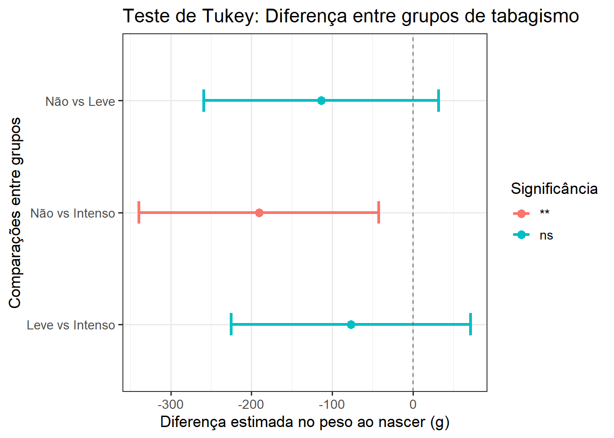
15.2.9 Tamanho do efeito
Uma das medidas de tamanho de efeito mais comumente relatadas para a ANOVA é o eta ao quadrado (\(\eta^2\)), que é um índice da força da associação entre um fator e uma variável dependente. Eta ao quadrado é a proporção da variação total atribuível ao fator. É calculado como a razão da variância do fator para a variância total e os valores variam de 0 a 1. Pode ser calculado o eta qo quadrado parcial ou generalizado. Aquio eta ao quadrado parcial é suficiente, enquanto que para desenhos mais complexos, como ANOVA de medidas repetidas, está mais indicado o generalizado, pois além de incluir o efeito entre sujeito, inclui outros efeitos
Esta medida pode ser obtida com o pacote effectsize (15), usando a função eta_squared(), usando o modelo modelo.aov.
effectsize::eta_squared (modelo.aov, partial = TRUE)For one-way between subjects designs, partial eta squared is equivalent
to eta squared. Returning eta squared.# Effect Size for ANOVA
Parameter | Eta2 | 95% CI
-------------------------------
tabagismo | 0.03 | [0.00, 1.00]
- One-sided CIs: upper bound fixed at [1.00].Apesar de ser controverso, pode-se seguir a orientação da Tabela 15.2), para a interpretação (16):
Resultado | Tamanho do Efeito |
|---|---|
0.01 | pequeno |
0,06 | médio |
0,14 | grande |
Para curiosos
O tamanho do efeito (eta ao quadrado) pode ser obtido de uma forma bem simples, sob o ponto de vista matemático. Ele é obtido pela fórmula, onde SQ = soma dos quadrados:
\[ \eta^{2}=\frac{SQ_{efeito}}{SQ_{total}} \]
Assim, obtendo a soma dos quadrados a partir do modelo.aov utilizando a função model_parameters()13 do pacote parameters:
anova <- parameters::model_parameters(modelo.aov)
SS_efeito <- anova$Sum_Squares[1]
SS_total <- anova$Sum_Squares[1]+anova$Sum_Squares[2]
eta_quadrado <- SS_efeito/SS_total
round(eta_quadrado,2)[1] 0.03Desta forma , a variância do efeito, no caso tabagismo, corresponde a a 0,03 (3%) da variância total.
15.2.10 Conclusão
O peso dos recém-nascidos foi estatisticamente diferente entre os diferentes grupos, F(2, 349) = 4.65, P = 0.0102, \(\eta^2\) = 0,03.
As análises post-hoc de Tukey revelaram que o peso dos recém-nascidos a termo no grupo das gestantes não fumantes apresentou uma diferença estatisticamente significativa do grupo de tabagismo intenso (-191g, IC95%: -339 a -42.1 g; P = 0,0076). Nos demais grupos não houve diferença significativa.
15.2.11 Apresentação dos resultados
Serão apresentados boxplots (Figura 15.12)), com ggboxplot(), do pacote ggpubr, utilizando, para cores do pacote ggsci., paleta do periódico New England of Medicine . Para adicionar teste estatístico, usou-se a função get_test_label() e para o teste post hoc, a função get_pwc_label(), ambas do pacote rstatix.
# 1. Construir um gráfico de linha com ggline do ggpubr
gline <- ggpubr::ggline(dados_anova,
x = "tabagismo",
y = "pesoRN",
color = "cyan4",
linetype = "dashed",
linewidth = 0.7,
add = "mean_ci",
point.size = 2,
legend = "none",
ggtheme = theme_classic(),
xlab = "Tabagismo Materno" ,
ylab = "Peso do Recém-nascido (g)") +
theme (text = element_text (size = 13),
axis.text.x = element_text(size = 11))
# 2. Realizar a ANOVA com rstatix para verificar o efeito geral
teste_anova <- rstatix::anova_test(dados_anova,
pesoRN ~ tabagismo) %>%
rstatix::add_significance()
# 2. Realizar o Teste de Tukey (comparações múltiplas par a par)
pwc <- dados_anova %>%
rstatix::tukey_hsd(pesoRN ~ tabagismo) %>%
rstatix::add_significance()
# 3. Adicionar as posições x e y para as comparações post-hoc
pwc <- pwc %>%
rstatix::add_xy_position(x = "tabagismo")
pwc <- pwc %>%
dplyr::mutate(y.position = c(3330, 3350, 3370))
# 4. Plotar o gráfico com o resultado das comparações post-hoc
gline +
stat_pvalue_manual(pwc,
tip.length = 0,
hide.ns = FALSE) +
# Incluir a estatística da ANOVA no subtítulo
labs(subtitle = get_test_label(stat.test = teste_anova,
detailed = TRUE),
caption = get_pwc_label(pwc))
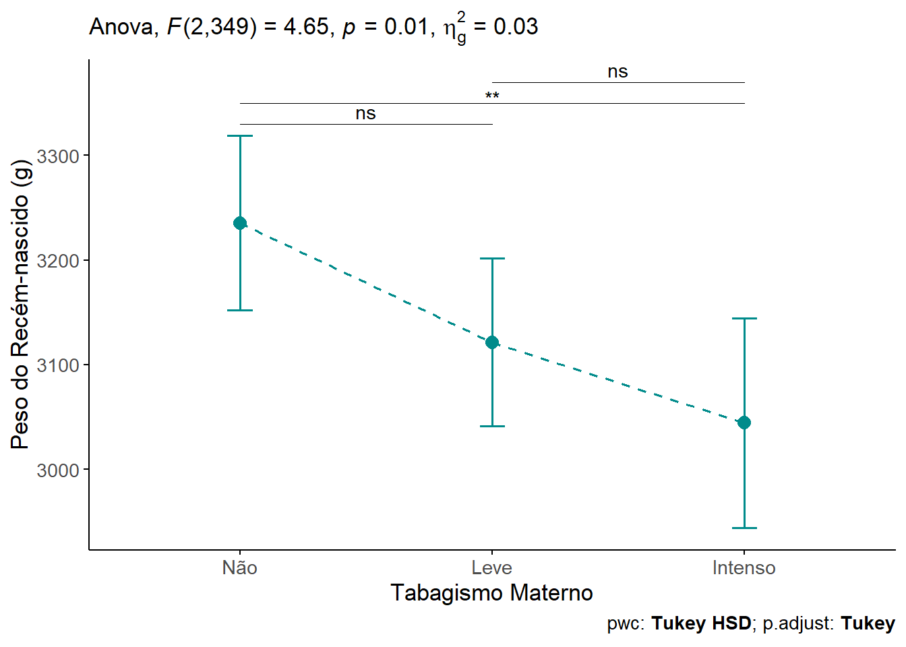
15.3 ANOVA de dois fatores
A ANOVA de dois fatores é uma extensão da ANOVA de um fator. Neste tipo de ANOVA, ao invés de observar o efeito de um fator sobre a variável desfecho contínua, é analisado simultaneamente o efeito de duas variáveis de agrupamento. Outros sinônimos para a ANOVA de dois fatores são: ANOVA fatorial ou ANOVA de duas vias. Quando se tem dois ou mais fatores, além de observar o efeito desses fatores sobre a variável desfecho, há necessidade de verificar se eles não interagem entre si. Portanto, é um objetivo importante da ANOVA fatorial avaliar se há um efeito de interação estatisticamente significativo entre os fatores.
15.3.1 Dados para o exemplo
O conjunto de dados, usado no exemplp, será o mesmo trabalhado na ANOVA de um fator (Seção 15.2.4.1) acresentando mais um fator (sexo) na análise.
dados_anova <- dados_anova %>%
dplyr::select(pesoRN, sexo, tabagismo)
str(dados_anova)tibble [352 × 3] (S3: tbl_df/tbl/data.frame)
$ pesoRN : num [1:352] 3110 2580 2965 3430 3060 ...
$ sexo : Factor w/ 2 levels "Masc","Fem": 1 1 1 2 1 2 1 1 1 1 ...
$ tabagismo: Factor w/ 3 levels "Não","Leve","Intenso": 1 1 1 1 1 1 1 1 1 1 ...Estes dados permitem a sua aplicação em uma ANOVA de dois fatores, pois têm:
Uma Variável Dependente (numérica/contínua):
pesoRN(Peso do Recém-Nascido, em gramas).Duas Variáveis Independentes (categóricas/fatores):
sexo(com 2 níveis: Masc, Fem) etabagismo(com 3 níveis: Não, Leve, Intenso).
A partir da ANOVA de dois fatores será possível avaliar:
O Efeito Principal do
sexonopesoRN.O Efeito Principal do
tabagismonopesoRN.O Efeito de Interação entre
sexoetabagismonopesoRN.
table(dados_anova$sexo, dados_anova$tabagismo)
Não Leve Intenso
Masc 72 63 59
Fem 48 58 52Através da função table(), observa-se que os dados têm uma estrutura um pouco mais complexa daquela da ANOVA de um fator, pois, à medida que aumentam os fatores, aumentam o número de células na estrutura do modelo. Existe uma preocupação a mais a ser analisada no ajuste do modelo. Esses dados estão claramente desbalanceados, tanto entre os níveis de tabagismo quanto entre os sexos. Tem-se um desenho 2 x 3 com cada célula contendo um número diferente de indivíduos. Isso pode afetar diretamente a forma como os efeitos são estimados em uma ANOVA de duas vias. Entretanto, as contagens variam de 48 a 72. Essa variação (máx/mín ≈ 1,5:1) é muito mais gerenciável. Segundo Peat ((17)), um desequilíbrio no tamanho das células de mais de 1:4, no modelo, seria uma preocupação. Da mesma forma, um número mínimo por célula de 10, sendo desejável pelo menos 30, pois um número pequeno leva a uma perda de poder estatístico. Na prática, na área da saúde, igual número em cada uma das caselas é muito raro ((18)) .
15.3.1.1 Descrição dos dados
Na saída da função str(), verifica-se que as variáveis de interesse: tabagismo está como fator com 3 níveis colocados de acordo com a intensidade de tabagismo materno em uma ordem lógica (Não, Leve e Intenso); a variável sexo estão como fator em dois níveis: Masculino e Feminino e não tem uma ordem lógica. A variável peso do recém-nascido (pesoRN) é uma variável num (numérica).
A sumarização dos dados será feita com as funções group_by() e summarise() do pacote dplyr para a variável pesoRN por grupos, sexo e tabagismo.
alpha <- 0.05
resumo <- dados_anova %>%
dplyr::group_by(sexo, tabagismo) %>%
dplyr::summarise(n = n(),
media = mean(pesoRN, na.rm=TRUE),
dp = sd(pesoRN, na.rm=TRUE),
ep = dp/sqrt(n),
me = qt((1 - alpha/2),n-1)*ep,
linf = media - me,
lsup = media + me,
.groups = "drop")
resumo# A tibble: 6 × 9
sexo tabagismo n media dp ep me linf lsup
<fct> <fct> <int> <dbl> <dbl> <dbl> <dbl> <dbl> <dbl>
1 Masc Não 72 3265. 456. 53.7 107. 3158. 3372.
2 Masc Leve 63 3198. 406. 51.1 102. 3096. 3300.
3 Masc Intenso 59 3124. 520. 67.7 136. 2989. 3260.
4 Fem Não 48 3191. 470. 67.9 137. 3054. 3327.
5 Fem Leve 58 3038. 473. 62.0 124. 2914. 3162.
6 Fem Intenso 52 2954. 537. 74.5 150. 2805. 3104.Usou-se .groups =, para controlar o argumento final.
= "drops", Remove todos os agrupamentos. O resultado fica como uma tabela comum;= "drop_last"remove apenas o último agrupamento, mantendo o outro;= "keep"mantém todos os agrupamentos (padrão).
15.3.1.2 Visualização dos dados
Um gráfico de linha (Figura 15.13) com barras de erro é uma boa maneira de visualizar o comportamento das variáveis. Mostra o impacto dos níveis de tabagismo (não fumante, fumante leve e fumante pesado) sobre peso dos recém-nascidos de acordo com o sexo.
ggpubr::ggline(data = dados_anova,
x = "tabagismo",
y = "pesoRN",
color = "sexo",
linewidth = 0.9,
linetype = "dashed",
legend.title = "",
position = position_dodge(width = 0.2),
ylab = "Peso médio do RN (g)",
xlab = "Nível de Tabagismo",
add = "mean_ci",
palette = "Dark2")
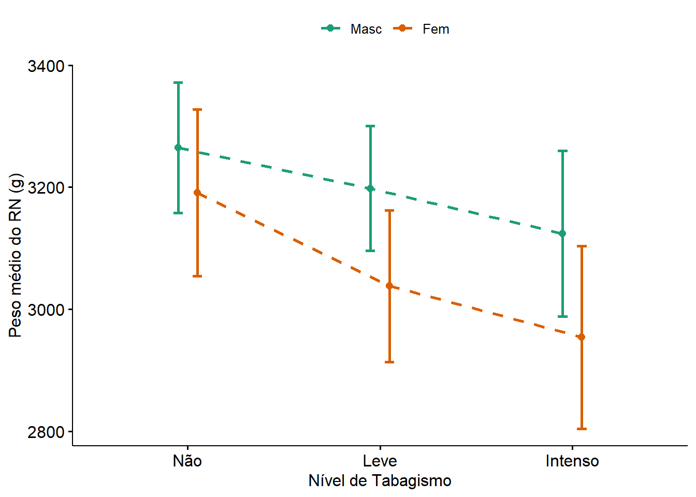
Tanto os dados numéricos como o gráfico de linhas exibem uma diminuição do peso dos recém-nascidos à medida que os níveis de tabagismo aumentam, bem como parece haver uma diferença entre os sexos.
Questão
Os pesos dos recém-nascidos dependem do seu sexo e dos níveis de tabagismo materno?
15.3.2 Hipóteses estatísticas
Como mencionado acima, uma ANOVA de duas vias é usada para avaliar simultaneamente o efeito de duas variáveis categóricas em uma variável quantitativa contínua. Ela é chamada de ANOVA de duas vias porque compara grupos formados por duas variáveis categóricas independentes.
A questão acima suscita várias hipóteses. Em particular, o interesse está em:
- medir e testar a relação entre a tabagismo e o peso do recém-nascido,
- medir e testar a relação entre sexo do recém-nascido e o seu peso, e
- possivelmente verificar se a relação entre tabagismo e peso do recém-nascido é diferente para meninos e maninas (o que é equivalente a verificar se a relação entre sexo e oeso do recém-nascido depende do tabagismo)
As duas primeiras relações são chamadas de efeitos principais, enquanto o item 3 é conhecido como efeito de interação.
Os efeitos principais testam se pelo menos um grupo é diferente de outro (durante o controle da outra variável independente). Por outro lado, o efeito de interação tem como objetivo testar se a relação entre duas variáveis difere dependendo do nível de uma terceira variável. Em outras palavras, se a variação entre a resposta e a primeira variável categórica não depender das modalidades da segunda variável categórica, então não há interação entre as duas variáveis. Se, ao contrário, houver uma modificação dessa variação, seja por um aumento no efeito da primeira variável, seja por uma diminuição, então há uma interação.
Voltando ao exemplo, a ANOVA de Duas Vias testa três hipóteses nulas (\(H_{0}\))::
Efeito principal do sexo no peso do recém-nascido:
\(H_{0}\): o peso médio do recém-nascido é igual entre meninas e meninos.
\(H_{1}\): o peso médio do recém-nascido é diferente entre meninas e meninos.
Efeito principal do tabagismo no peso do recém-nascido:
\(H_{0}\): o peso médio dos recém-nascidos é igual entre as categorias de tabagismo.
\(H_{1}\): o peso médio dos recém-nascidos é diferente entre as categorias de tabagismo
Interação entre sexo e álcool:
\(H_{0}\): não há interação entre sexo e tabagismo, o que significa que o efeito do tabagismo no peso do recém-nascido é o mesmo para meninas e meninos. \(H_{1}\): há interação entre sexo e peso do recém-nascido, o que significa que o efeito do tabagismo no peso do recém-nascido é diferente para meninas e meninos.
15.3.3 Teste estatístico
De um modo geral, o sofware estatístico calcula a Soma dos Quadrados(SQ) para cada uma das fontes de variação (sexo, tabagismo, interação e resíduos) e a partir delas, calcula os Quadrados Médios (QM)14 e dividindo cada um pelos seus respectivos graus de liberdade, obtém-se a estatística F para cada efeito. O valor de F é comparado a uma distribuição F (veja a Seção 15.2.3) para obter o valor p associado a cada hipótese, de acordo com o o valor de \(\alpha\) escolhido previamente (em geral, 0,05) .
\[ F = \frac{\text{variância entre}}{\text{variância dentro}} = \frac{\frac{SQ_{E}}{gl_{E}}}{\frac{SQ_{R}}{gl_{R}}} =\frac{QM_{E}}{QM_{D}} \] O resultado do teste é tipicamente apresentado em uma tabela como esta (@tbl-anova), denominada de Tabela da ANOVA:
Fonte de Variação | Soma dos Quadrados | Graus de Liberdade | Quadrado Médio | Estatística F | Valor p |
|---|---|---|---|---|---|
Sexo(A) | SQA | 1 | QMA | FA | pA |
Tabagismo(B) | SQB | 2 | QMB | FB | pB |
Interação (A*B) | SQA*B | 2 | QMA*B | FA*B | pA*B |
Resíduo/Erro | SQErro | 346 | QErro | ||
Total | SQTotal | 351 |
Os graus de liberdade são obtidos da seguinte maneira:
- Graus de liberdade do fator A (sexo) = nº de níveis de A - 1 = 2 - 1 = 1;
- Graude liberdade do fator B (tabagismo) = nº de níveis de B - 1 = 3 - 1 = 2;
- Graus de liberdade do Interação (sexo:tabagismo) = (nº de níveis de A - 1) x (nº de níveis de B - 1) = 1 x 2 = 2;
- Graus de liberdade do Erro = Total de observações - nº de grupos formados pelos níveis dos fatores = 352 - (2 x 3) = 346;
- Graus de liberdsade total = 1 + 2 + 2 + 346 = 351.
15.3.3.1 Ajustando um modelo com interação
Na ANOVA de de uma via foi testado as diferenças entre a médias quando há uma única variável independente. Uma das vantagens da ANOVA é poder observar os efeitos de mais de uma variável independente e como essas variáveis interagem. Para criar um modelo de ANOVA de dois fatores, pode-se usar a função aov() , usada na ANOVA de uma via. O princípio é o mesmo, apenas acrescenta-se o segundo fator, usando o sinal de + e um termo de interação com um asterisco * ou dois pontos : . A inclusão de um efeito de interação em uma ANOVA de duas vias não é obrigatória. Entretanto, para evitar conclusões errôneas, recomenda-se verificar primeiro se a interação é significativa ou não e, dependendo dos resultados, incluí-la ou não. Se a interação não for significativa, é seguro removê-la do modelo final. Por outro lado, se a interação for significativa, ela deverá ser incluída no modelo final que será usado para interpretar os resultados. Portanto, deve-se começar com um modelo que inclui os dois efeitos principais (ou seja, sexo e tabagismo) e a interação:
mod.aov.int <- aov(formula = pesoRN ~ tabagismo * sexo,
data = dados_anova)
summary(mod.aov.int) Df Sum Sq Mean Sq F value Pr(>F)
tabagismo 2 2136213 1068107 4.709 0.00960 **
sexo 1 1570809 1570809 6.925 0.00888 **
tabagismo:sexo 2 160346 80173 0.353 0.70250
Residuals 346 78478383 226816
---
Signif. codes: 0 '***' 0.001 '**' 0.01 '*' 0.05 '.' 0.1 ' ' 115.3.3.2 Interpretação do modelo com interação
Semelhante a uma ANOVA de uma via, o princípio de uma ANOVA de duas vias baseia-se na dispersão total dos dados e em sua decomposição em quatro componentes:
Parcela atribuível ao primeiro fator
Parcela atribuível ao segundo fator
Parcela atribuível à interação dos dois fatores
Parte não explicada ou residual.
A soma dos quadrados (coluna Sum Sq ) mostra esses quatro componentes. A ANOVA de duas vias consiste em usar um teste estatístico para determinar se cada componente de variação (atribuível aos dois fatores estudados e à interação deles) é significativamente maior do que o componente residual. Se esse for o caso, concluí-se que o efeito considerado (tabagismo, sexo ou a interação) é significativo.
Vê-se que a variável tabagismo assim como a variável sexo mostraram-se significativas. Os valore p são exibidos na última coluna do resultado acima ( Pr(>F )). A partir desses valores, conclui-se que, no nível de \(\alpha\)= 0,05 :
Controlando para o tabagismo, o peso dos recém nascidos são significativamente diferentes entre os dois sexos (p = 0,01),
Controlando para o sexo, o peso dos recém-nascidos é significativamente diferente (p < 0,01) para pelo menos uma categoria de tabagismo, e
A interação entre sexo e tabagismo (exibida na linha
tabagismo:sexono resultado) mostrou-se não significativa (p = 0,703). Isso quer dizer que o efeito do tabagismo não depende depende do sexo .
Cuidado
Atente para o fato que a função aov() pressupõe um projeto balanceado, o que significa tamanhos de amostra semelhantes dentro dos níveis das variáveis de agrupamento independentes. Para verificar se os dados estão balanceados, proceda como mostrado na Seção 15.3.1. Quando os resultados mostram o mesmo número de indivíduos em todas as células, não importa qual o tipo de ANOVA a ser usado, os resultados serão iguais. A aov() usa as somas de quadrados do tipo I.
Para delineamentos não balanceados, ou seja, números desiguais de indivíduos em cada subgrupo, os métodos recomendados são:
A ANOVA do tipo II, quando não há interação significativa, que pode ser feita, no R, com
Anova(modelo, type = “II”)ouAnova(modelo, type = 2), em quemodeloé o nome do modelo salvo, eA ANOVA do tipo III, quando há uma interação significativa, que pode ser feita, no R, com
Anova(modelo, type = “III”)ouAnova(modelo, type = 3). Fundamentalmente, a diferença entre um método e outro é como o R calcula a soma dos quadrados ao calcular a ANOVA. Quando os dados são balanceados, os três tipos dão o mesmo resultado 15.
Pode-se dar seguimento, ajustando o modelo sem a interação.
15.3.3.3 Modelo sem interação
A análise anterior mostrou que a interação não é significativa, deve-se re-analisar os efeitos principais usando a ANOVA Tipo II (que é o padrão quando não há interação).
mod.aov <- aov(formula = pesoRN ~ tabagismo + sexo,
data = dados_anova)
car::Anova(mod.aov, type = 2)Anova Table (Type II tests)
Response: pesoRN
Sum Sq Df F value Pr(>F)
tabagismo 1912597 2 4.2319 0.015279 *
sexo 1570809 1 6.9513 0.008751 **
Residuals 78638730 348
---
Signif. codes: 0 '***' 0.001 '**' 0.01 '*' 0.05 '.' 0.1 ' ' 1- Efeito do Tabagismo (p = 0.0153): conclui-se que o tabagismo tem um efeito estatisticamente significativo no peso, ajustado para o sexo. Isso significa que a diferença de peso entre os níveis (Não, Leve, Intenso) é real, independentemente de ser menino ou menina.
- Efeito do Sexo ( p = 0.0088): conclui-se que sexo tem um efeito estatisticamente significativo no peso, ajustado para o tabagismo. Isso significa que a diferença de peso entre meninoss e meninas é real, independentemente do nível de tabagismo.
15.3.4 Avaliação dos pressupostos
15.3.4.1 Criação da variável residuos e valores ajustados
Como os pressupostos são avaliados nos resíduos, eles, junto com os valores ajustados, serão obtidos a partir do modelo de ajuste em uso (mod.aov)
dados_anova <- dados_anova %>%
mutate(residuos = residuals(mod.aov),
ajustados = fitted(mod.aov))
str(dados_anova)tibble [352 × 5] (S3: tbl_df/tbl/data.frame)
$ pesoRN : num [1:352] 3110 2580 2965 3430 3060 ...
$ sexo : Factor w/ 2 levels "Masc","Fem": 1 1 1 2 1 2 1 1 1 1 ...
$ tabagismo: Factor w/ 3 levels "Não","Leve","Intenso": 1 1 1 1 1 1 1 1 1 1 ...
$ residuos : Named num [1:352] -179 -709 -324 276 -229 ...
..- attr(*, "names")= chr [1:352] "1" "2" "3" "4" ...
$ ajustados: Named num [1:352] 3289 3289 3289 3154 3289 ...
..- attr(*, "names")= chr [1:352] "1" "2" "3" "4" ...15.3.4.2 Normalidade dos resíduos
Os resíduos (erros) do modelo devem seguir uma distribuição normal. Isto pode ser verificado, como visto na ANOVA de uma via, com o teste Shapiro-Wilk, através da função shapiro_test() do pacote rstatix.
dados_anova %>%
shapiro_test(residuos)# A tibble: 1 × 3
variable statistic p
<chr> <dbl> <dbl>
1 residuos 0.990 0.0164O teste retornou um valor p = 0,0164 (p < 0,05). Isto indica que uma evidência estatisticamente significativa de que os respiduos não seguem uma distribuição normal, considerando um nível de signifcância de 5%. Entretanto, como um n > 30 por grupo a ANOVA costuma ser robusta a pequenas violações da normalidade.
15.3.4.2.1 QQplot
Complementando a valiação da normalidade, será construído um QQ plot com a função ggqqplot() do pacote ggpubr:
ggpubr::ggqqplot(data = dados_anova,
x = "residuos",
conf.int = TRUE,
shape = 19,
xlab = "Quantis teóricos",
ylab = "Resíduos",
color = "dodgerblue4")
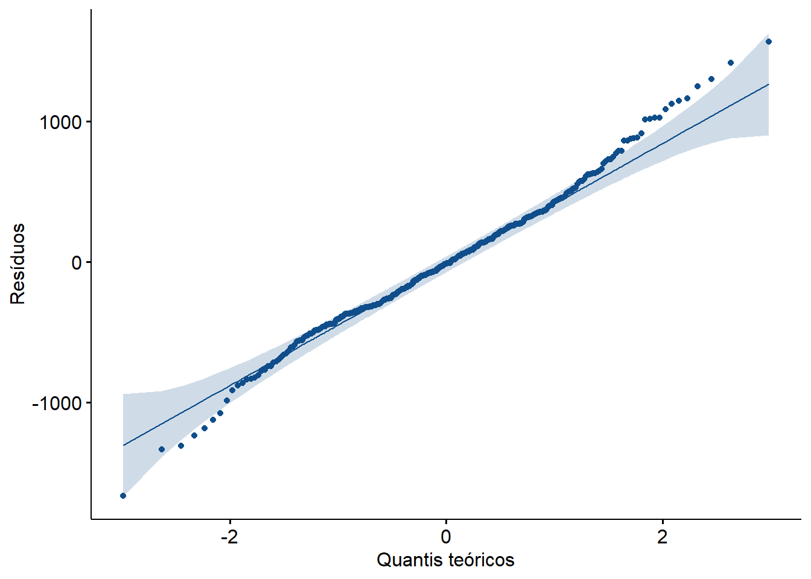
Apesar do valor p de 0,0164 no teste de Shapiro-Wilk indicar desvio da normalidade, o gráfico QQ (Figura 15.14) mostra que os resíduos seguem uma linha razoavelmente reta, com pequenas curvaturas apenas nas extremidades (caudas).
15.3.4.2.2 Histograma
Um histograma aumenta a segurança na avaliação da normalidade, principalmente quando o teste de Shapiro-Wilk rejeita a hipótese nula da normalidade:
ggpubr::gghistogram(data = dados_anova,
x = "residuos",
fill = "lightblue",
bins = 10,
color = "black",
ylab = "Frequência",
xlab = "Resíduos")
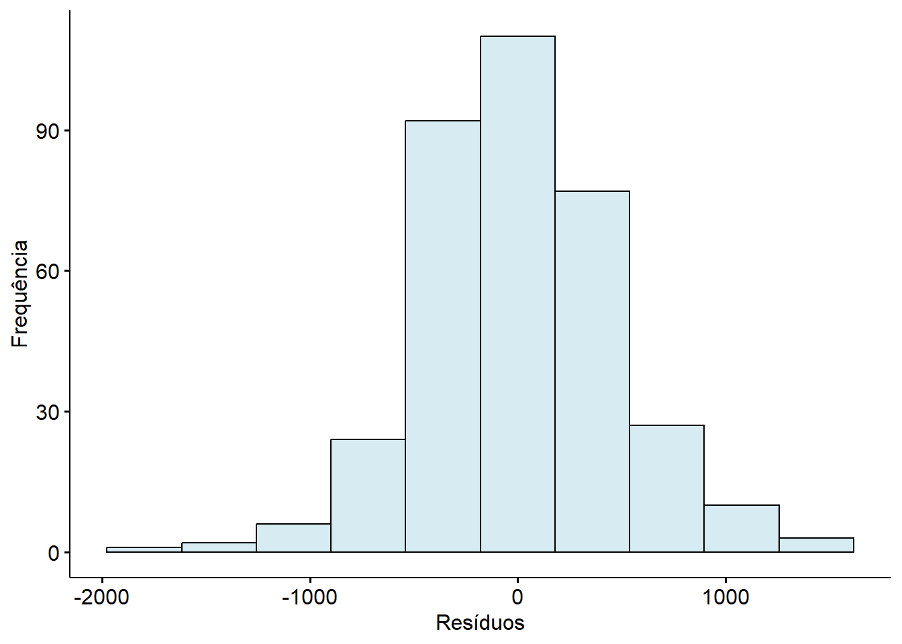
A Figura 15.15 do histograma dos resíduos, mostra uma distribuição aproximadamente simétrica, centrada em torno de 0, leves caudas mais pesadas, mas sem grandes distorções e sem assimetrias graves nem multimodalidade.
A conclusão geral da avaliação da normalidade aponta um leve desvio de normalidade dos resíduos (valor p de 0,0164 no Shapiro-Wilk), mas com base no QQ plot razoavelmente linear e no histograma com forma quase normal e no tamanho amostral (> 100 por grupo), pode-se seguir com a ANOVA com segurança. A ANOVA é bastante robusta a essa leve violação.
15.3.4.3 Homogeneidade da variância
Para verificar a homoscedasticidade (igualdade de variâncias) na ANOVA de duas vias, o Teste de Levene é uma excelente escolha. A forma de aplicar o teste usa a função leveneTest() do pacote car e depende se a interação entre os fatores for incluída ou não.
Quando há interação entre os fatores, cada combinação de níveis dos fatores:
Levene's Test for Homogeneity of Variance (center = median)
Df F value Pr(>F)
group 5 0.5088 0.7696
346 Levene's Test for Homogeneity of Variance (center = median)
Df F value Pr(>F)
group 5 0.5088 0.7696
346 No exemplo que está sendo testado não houve interação, então, o teste de Levene pode ser aplicado separadamente para cada fator principal:
leveneTest(pesoRN ~ tabagismo, data = dados_anova)Levene's Test for Homogeneity of Variance (center = median)
Df F value Pr(>F)
group 2 1.7984 0.1671
349 leveneTest(pesoRN ~ sexo, data = dados_anova)Levene's Test for Homogeneity of Variance (center = median)
Df F value Pr(>F)
group 1 2.1217 0.1461
350 15.3.4.3.1 Gráfico diagnóstico
O gráfico de resíduos vs. valores ajustados ajuda a avaliar a homoscedasticidade dos resíduos e ausência de padrão sistemático nos resíduos:
ggplot(dados_anova,
aes(x = ajustados,
y = residuos)) +
geom_point() +
geom_hline(yintercept = 0, color = "red") +
labs(title = "Resíduos vs Ajustados") +
theme_classic(base_size = 13)
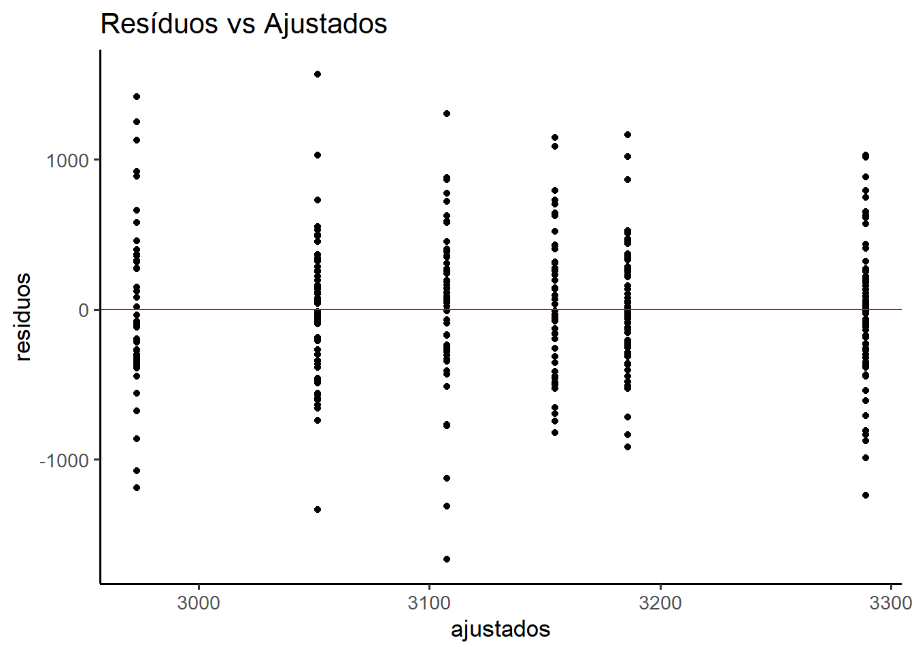
A Figura 15.16 que a distribuição vertical dos resíduos parece razoavelmente constante em torno de zero, para todos os valores ajustados, não havendo uma heteroscedasticidade visível. Também não um padrão em forma de funil, sinal de que o modelo está bem ajustado e os resíduos se comportam aleatoriamente.
São visíveis alguns outliers (resíduos bem distantes de zero), mas nada extremo ou preocupante considerando o tamanho da amostra.
Portanto, apoiado no Teste de Levene e no gráfico da Figura 15.16, reforça a homogeneidade das variâncias.
15.3.4.4 Outliers
O gráfico diagnóstico Figura 15.16 apontou alguns outliers que serão identificados, usando a função identify_outliers() do pacote rstatix:
dados_anova %>%
dplyr::group_by(sexo, tabagismo) %>%
rstatix::identify_outliers(residuos)# A tibble: 11 × 7
sexo tabagismo pesoRN residuos ajustados is.outlier is.extreme
<fct> <fct> <dbl> <dbl> <dbl> <lgl> <lgl>
1 Masc Não 2051 -1238. 3289. TRUE FALSE
2 Masc Não 4305 1016. 3289. TRUE FALSE
3 Masc Não 4315 1026. 3289. TRUE FALSE
4 Masc Leve 4350 1164. 3186. TRUE FALSE
5 Masc Intenso 1440 -1668. 3108. TRUE FALSE
6 Masc Intenso 1980 -1128. 3108. TRUE FALSE
7 Masc Intenso 1795 -1313. 3108. TRUE FALSE
8 Masc Intenso 4410 1302. 3108. TRUE FALSE
9 Fem Leve 1715 -1336. 3051. TRUE FALSE
10 Fem Leve 4620 1569. 3051. TRUE FALSE
11 Fem Intenso 4390 1417. 2973. TRUE FALSE Alguns outliers (11) foram identificados com base nos resíduos padronizados, mas não foram classificados como extremos (acima de \(3 \times IIQ\)). Eles estão distribuídos entre diferentes combinações de fatores, o que sugere que não há viés sistemático. Considerando o tamanho amostral e a robustez da ANOVA, optou-se por mantê-los na análise.
Modelo de relatório
Verificação dos pressupostos da ANOVA Fatorial
Antes da interpretação dos resultados obtidos por meio da Análise de Variância (ANOVA), é fundamental avaliar se os pressupostos do modelo foram atendidos. A validade das inferências estatísticas depende diretamente do cumprimento dessas condições.
Normalidade dos resíduos
A suposição de normalidade dos resíduos foi inicialmente avaliada por meio do teste de Shapiro-Wilk, cujo resultado indicou uma leve violação desse pressuposto (p = 0,02). Apesar disso, a inspeção visual do gráfico quantil-quantil (QQ plot) e do histograma dos resíduos revelou uma distribuição aproximadamente simétrica, com pequeno desvio nas caudas, sem indícios de distorções severas. Considerando o elevado tamanho amostral por grupo (superior a 100 observações), a ANOVA demonstra robustez suficiente para lidar com pequenas violações da normalidade.Homogeneidade das variâncias (homocedasticidade)
A igualdade das variâncias entre os grupos foi testada por meio do teste de Levene, utilizando a mediana como medida de centralidade. O resultado (p = 0,7696) não indicou diferenças estatisticamente significativas entre as variâncias, corroborando o pressuposto de homocedasticidade. Essa evidência foi reforçada pelo gráfico de resíduos versus valores ajustados, no qual a dispersão dos resíduos se apresentou constante, sem tendência ou padrão sistemático.
Independência dos resíduos
A independência dos resíduos é assumida com base no delineamento experimental adotado, o qual não apresenta indícios de dependência entre as observações.Identificação de valores atípicos (outliers)
Alguns resíduos foram identificados como outliers, porém nenhum foi classificado como extremo. Esses casos encontram-se distribuídos entre diferentes grupos e não apresentam padrão que indique viés sistemático. Dado o tamanho da amostra e o impacto estatístico limitado desses pontos, optou-se por mantê-los na análise.
Conclusão
A análise conjunta dos testes estatísticos e das evidências gráficas indica que os pressupostos da ANOVA foram suficientemente atendidos. Dessa forma, os resultados inferenciais obtidos podem ser interpretados com segurança e validade estatística.
15.3.5 Testes post hoc
15.3.5.1 Teste de Tukey
Quando uma análise de variância (ANOVA) detecta diferenças estatisticamente significativas entre médias de grupos, o próximo passo é identificar quais pares de médias diferem entre si. Para isso, utiliza-se um teste post hoc, ou seja, um procedimento complementar que controla o erro tipo I em múltiplas comparações.
Entre os testes post hoc disponíveis, o teste de Tukey HSD (Honest Significant Difference) é um dos mais utilizados pela sua robustez e facilidade de interpretação.
pwc <- rstatix::tukey_hsd (mod.aov)15.3.5.1.1 Preparar os dados para visualização
pwc <- pwc %>%
mutate(
comparacao = paste(group1, "vs", group2),
signif_color = ifelse(p.adj.signif %in% c("**", "***", "****"),
p.adj.signif, "ns"))15.3.5.1.2 Gráfico com pontos (diferença média) e barras de erro(IC)
ggplot(pwc, aes(x = estimate,
y = reorder(comparacao, estimate))) +
geom_vline(xintercept = 0,
linetype = "dashed",
color = "gray40") +
geom_errorbarh(aes(xmin = conf.low, xmax = conf.high), height = 0.3) +
geom_point(aes(color = signif_color), size = 3) +
scale_color_manual(values = c("****" = "gold", "***" = "darkorange", "**" = "greenyellow", "ns" = "gray60"),name = "Significância") +
labs(
title = "Diferenças entre Grupos - Tukey HSD",
x = "Diferença Média",
y = "Comparações") +
theme_bw() +
theme(
legend.position = "top",
axis.text.y = element_text(size = 10),
plot.title = element_text(face = "bold", size = 14))
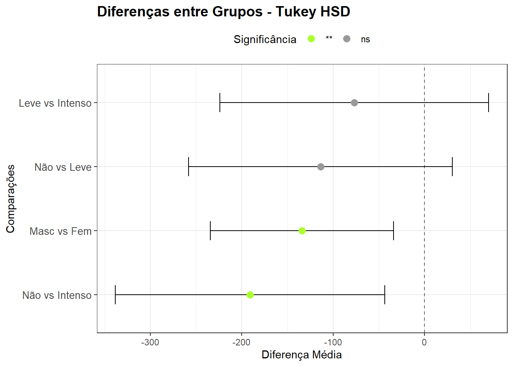
15.3.5.1.3 Análise dos Testes Post-hoc (Tukey HSD)
Comparações entre níveis de tabagismo:
Não fumante vs. Leve:
Não há diferença estatisticamente significativa no peso do recém-nascido entre os grupos “Não Fumante” e “Fumante Leve”. A diferença estimada de perda (sinal negativo) ou ganho (sinal positivo) de peso foi de -113,75 g (IC95%: - 257,90; 30,41), p = 0,153.
Não fumante vs. Intenso:
Existe uma diferença estatisticamente significativa no peso dos recém-nascidos entre os grupos “Não Fumante” e “Fumante Intenso”. A diferença estimada de perda de peso foi de -190,72 g (IC95%: -338,07; -43,37), p = 0,007. Os recém-nascidos de mães fumantes intensas apresentaram peso significativamente menor do que os de mães não fumantes.
Leve vs. Intenso:
Não há diferença estatisticamente significativa no peso dos recém-nascidos entre os grupos “Fumante Leve” e “Fumante Pesado”. A diferença estimada de perda (sinal negativo) ou ganho (sinal positivo) de peso foi de -76,97 g (IC95%: - 224,03; 70,08), p = 0,435.
Conclusão Principal: O principal impacto no peso não vem da transição de “Não Fumante” para “Fumante Leve”, mas sim da comparação entre os extremos, mostrando que a exposição intensa ao tabagismo causa uma redução de peso estatisticamente relevante.
Comparação entre sexos:
Masculino vs. Feminino:
A comparação entre os sexos revelou diferença estatisticamente significativa (p = 0,0089). Recém-nascidos do sexo masculino apresentaram, em média, peso 133,97 g superior ao dos do sexo feminino (IC95%: 43,37; 338,07).
15.3.6 Tamanho do Efeito
O eta quadrado (η²) e omega quadrado para cada fator, que indicam quanto da variância total é explicada por cada um:
effectsize::eta_squared (mod.aov, partial = TRUE)# Effect Size for ANOVA (Type I)
Parameter | Eta2 (partial) | 95% CI
-----------------------------------------
tabagismo | 0.03 | [0.00, 1.00]
sexo | 0.02 | [0.00, 1.00]
- One-sided CIs: upper bound fixed at [1.00].effectsize::omega_squared (mod.aov, partial = TRUE)# Effect Size for ANOVA (Type I)
Parameter | Omega2 (partial) | 95% CI
-------------------------------------------
tabagismo | 0.02 | [0.00, 1.00]
sexo | 0.02 | [0.00, 1.00]
- One-sided CIs: upper bound fixed at [1.00].Valores acima de 0.01 são pequenos, 0.06 médios e acima de 0.14 grandes (segundo Cohen).
15.3.7 Relatando os resultados
15.3.7.1 Construção de um gráfico linha com teste e valor p
# Comparações por pares
pwc <- dados_anova %>%
dplyr::group_by(tabagismo) %>%
rstatix::tukey_hsd(formula = pesoRN ~ sexo)
# Calcular e adicionar posições x e y
pwc <- pwc %>%
add_xy_position(fun = "mean_ci",
x = "tabagismo",
dodge = 0.8)
# Cálculo da anova co o rstatix
anova <- anova_test(mod.aov)
# Construção do gráfico
gl <- ggpubr::ggline(dados_anova,
x = "tabagismo", y = "pesoRN",
add = "mean_ci",
color = "sexo",
linetype = "dashed",
linewidth = 0.9,
palette = "nejm",
position = position_dodge(0.2)) +
theme(legend.key.size = unit(0.3, 'cm')) +
theme(legend.position = "right")+
stat_pvalue_manual(pwc,
label = "p.adj.signif",
tip.length = 0.005,
y.position = 3500) +
labs (x = "Tabagismo",
y = "Peso do Recém-Nascido",
subtitle = rstatix::get_test_label (anova,
detailed = TRUE),
caption = rstatix::get_pwc_label(pwc))
gl
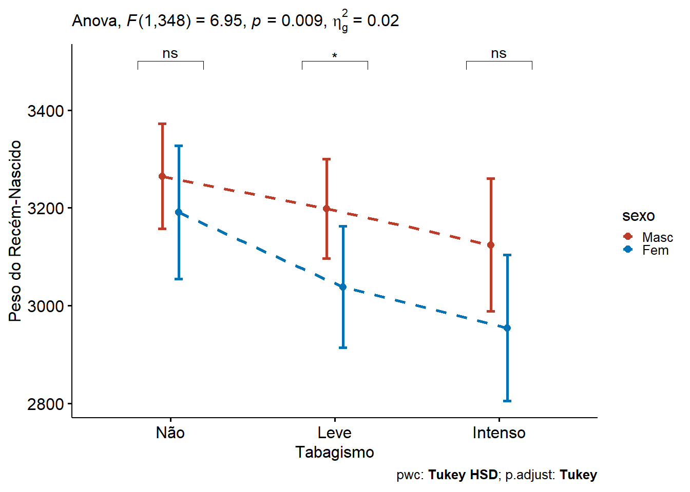
Os resultados indicam que tanto o sexo do recém-nascido quanto o nível de tabagismo materno influenciam significativamente o peso ao nascer. Observou-se:
Um efeito negativo do tabagismo intenso sobre o peso neonatal, sugerindo impacto negativo crescente conforme o nível de exposição.
Efeito de Tabagismo:
Comparação Diferença (g) IC 95% p Sig Não vs. Leve -113,75 [-257,90; 30,41] 0,153 ns Não vs. Intenso -190,72 [-338,07; -43,37] 0,007 ** Leve vs. Intenso -76,97 [-224,03; 70,08] 0,435 ns Um peso maior entre recém-nascidos do sexo masculino, corroborado pelos dados descritivos e pelos resultados inferenciais.
Efeito de Sexo:
Comparação Diferença (g) IC 95% p Sig Masc vs. Fem 133,97 [33,78; 234,16] 0,008 **
Todos os pressupostos da ANOVA foram adequadamente atendidos, permitindo confiança nos resultados obtidos.
Pode ser usada também para comparar a média de duas populações e o resultado será o mesmo de um teste t para amostras independentes.↩︎
Quando se referir a abreviação
dfdedegree of freedomem algumas funções, optou-se por manterdf,sem a tradução paragl(graus de liberdade), como em geral se usa no texto.↩︎Na realidade, bem simplista!↩︎
Testes de Monte Carlo, também conhecidos como Simulações de Monte Carlo, são uma classe de métodos computacionais que dependem de amostragem aleatória repetida para obter resultados numéricos. O nome “Monte Carlo” vem do famoso cassino em Mônaco, pois o método se baseia na aleatoriedade de um jogo de roleta.↩︎
Filtrar recém-nascidos a termo (≥37 e <42 semanas) foi uma escolha para reduzir variabilidade.↩︎
O desbalanceamento pode introduzir vieses que podem afetar a validade das conclusões, pois grupos pequenos podem não ser representativos; os grupos maiores podem ter uma média mais estável, enquanto que os menores podem ter flutuações aleatórias ou outliers.↩︎
A subamostragem foi realizada com controle de aleatoriedade (set.seed) para garantir reprodutibilidade, e os grupos foram praticamente igualados , permitindo aplicação da ANOVA de uma via com maior robustez e comparabilidade entre os níveis de exposição ao tabagismo.↩︎
Volte à Seção 8.3 para mais informações sobre o como fazer gráficos no
ggplot2.↩︎O teste estatístico também pode ser realizado com a função
anova_test()do pacoterstatixque será usado na construção da Figura 15.12.↩︎Por isso, não apareceu a linha vermelha horizontal tracejada.↩︎
Um método é mais robusto quando ele continua funcionando bem mesmo que algumas suposições sejam violadas, como presença de outliers ou dados não perfeitamente normais.↩︎
Foi escolhido o nome
pwccom o objtivo de lembrar que uma comparação de pares (Pairwise Comparison).↩︎Para saber quais modelos são suportados pela função, digite no Console do RStudio:
parameters::supported_models()↩︎Que são as variâncias.↩︎
Para os interessados, pode-se obter maiores informações sobre os diferentes tipos de ANOVA em https://www.r-bloggers.com/2011/03/anova-%E2%80%93-type-iiiiii-ss-explained/↩︎